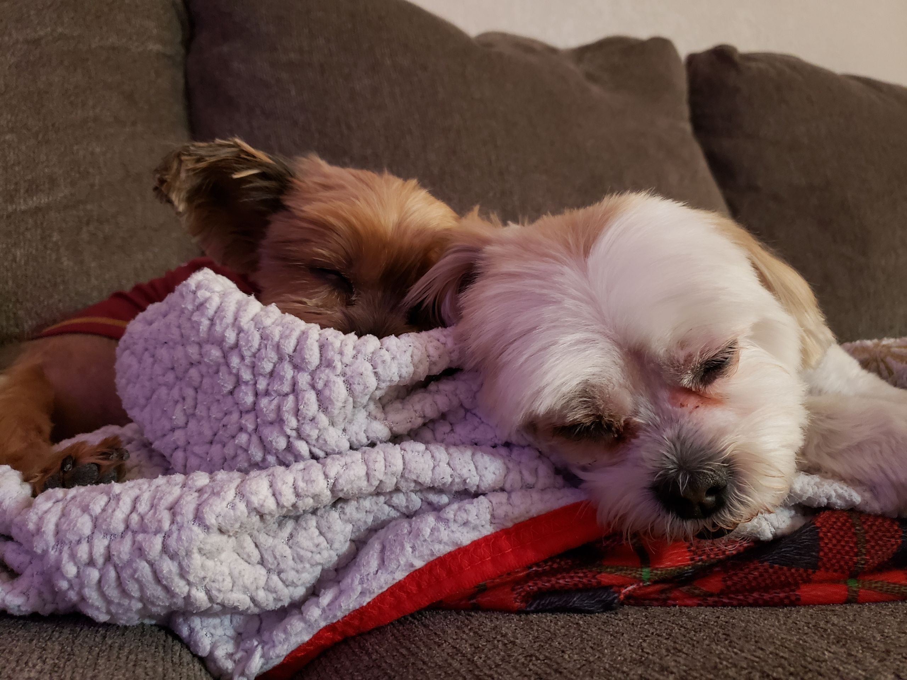

After a long day, sometimes the best thing to clear your head is a long shower. Put on some jams, relax, and soak in that warm water!
Quote
Quote Author
Today you have Object Oriented Analysis & Design from 10:20 a.m. to 11:10 a.m. and Image from 4:10 p.m. to 5:25 p.m. You got this!
After a long day, sometimes the best thing to clear your head is a long shower. Put on some jams, relax, and soak in that warm water!
Take some time to clean your room! Throw on some music and organize your books, do some dusting, make your bed, etc. It may seem tedious now but a clean room will lift your mood, I promise!
Chances are your back is gonna hurt halfway through the day so remember to lie down for a bit when it does! Take this chance to relax a bit by watching some YouTube, scrolling through social media, or playing some mobile games.
Take a few minutes to close your eyes and do some breathing exercises to help clear your head and calm your anxiety. Follow one of the links below to get started:
Today you have Web from 9:35 a.m. to 10:50 a.m. and Image Lab from 12:45 p.m. to 2 p.m. Let's do this!
Take the puppers out for a quick walk around the neighborhood. Maybe stop by the park while you're out?
Whether it's lo-fi, K-pop, or video game music, put on some music while you work! Take a moment here and there to hum along or if you're feeling up to it, dance like nobody's watching!
Links to your playlists on YouTube:
Why not sleep for a bit? 2:00 p.m. is prime nap time! Remember not to sleep for too long though or you'll be groggy for the rest of the day.
Why not take some time to draw something? Here are some ideas to get you started:
Today you have Object Oriented Analysis & Design from 10:20 a.m. to 11:10 a.m. and work from 11:30 a.m. to 4:00 p.m. Remember to take breaks!
Take some time to step away from your work and peruse the fridge or cabinets for something to snack on! If you're feeling unhealthy, why not grab some chips or that candy you've been craving? Remember to watch the calories though!
Sitting at the computer all day is definitely not good for you so take a moment to get up and stretch! Take a quick walk around the house or do some simple stretches to get the blood flowing.
Take some time out of the day to get some exercise in! Do some weight lifting, some cardio (e.g., running, exercise bike, etc.), or some simple no weight workout routines. After all, a healthy body means a healthy mind!
Today you have Web lab from 9:35 a.m. to 10:50 a.m. Keep your head up!
Take an hour or two to hang out with some friends! Maybe grab lunch or some boba? Whatever you choose to do, it's always better with friends!
Treat yourself to some lunch after lab or on your way home, you deserve it! Sometimes you just need to splurge a little on something tasty to lift your mood.
Chances are the puppers have been sleeping all day while you're at school. Take some time to play fetch or tug-of-war with them! You get to step away from work for a bit and best of all, they'll be happy!
Today you have Object Oriented Analysis & Design from 10:20 a.m. to 11:10 a.m. and work from 11:30 a.m. to 4:00 p.m. Remember to take a moment to breathe!
Take some time to watch a video or two on YouTube! Cooking videos, memes, true crime, video game news; there's always something new to watch. Careful not to fall down a couple hour long rabbit hole of videos though!
It could be fun to cook or bake something for the family! Make sure you start early though since some recipes could take a while to finish. Check here for some new recipes to try:
Social media can definitely be a timesuck. Instead of scrolling for hours, try putting your phone away for the majority of the day and direct your attention to something else! Your phone isn't going anywhere, I promise.
Just like YouTube, there's always something new to watch on Netflix. Maybe throw on a horror movie or rewatch the same show you've seen a million times? No matter what you choose to watch, it can be good to step away from your work for a while.
No classes today but take a few hours to finish some errands and work on homework!
Finally the weekend! Try sleeping in an hour or two to catch up on some of the sleep you lost during the week.
Take some time to hang out with granny! Whether it's doing puzzles with her, helping her with her garden, or just hanging out, she will appreciate the company.
Take some time to go grocery shopping for the week! Don't forget to check what you need and make a shopping list before heading out. As always, make sure to add candy to that list while you're at it!
After a long week, sometimes all you need is some delicious ice cream! Doesn't matter if it's a simple popsicle or a Blizzard from Dairy Queen, just take some time to enjoy it!
No classes today! Take a moment to relax and get refreshed before the next week begins!
Finally some time to enjoy some video games! It can be good to just sit down and enter a whole new world, even if it's just for a few hours.
Take some time to catch up on your favorite comics or start a new one! There's always something new to read and enjoy.
Another week means more homework and due dates. Take some time to plan your schedule for the week and figure out what needs to get done first. Sure it can be stressful but it's good to know when everything is due!
Quote Author